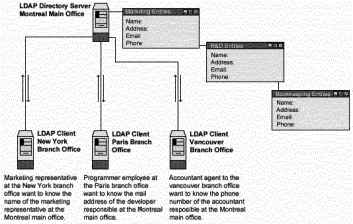
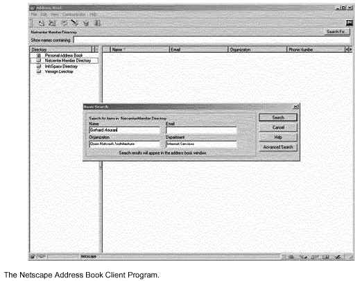

L
i n u x P a r
k
при
поддержке ¬еб луба |
√лава 17 —ерверное программное обеспечение (—ервис баз данных) -
OpenLDAP сервер¬ этой главе
OpenLDAP
сервер
онфигурации
ќрганизаци€
защиты OpenLDAP
”тилиты
создани€ и поддержки OpenLDAP
”тилиты
пользовател€ OpenLDAP
Netscape
Address Book клиент дл€ LDAP
Linux сервер
баз данных PostgreSQL
—оздание и
инсталл€ци€ базы данных из-под пользовател€ Postgres
онфигурации
оманды
|
 |
Linux OpenLDAP сервер
раткий обзор.
≈сли мы говорим в этой книге о безопасности и оптимизации, то
почему вдруг возникает глава посв€щенна€ OpenLDAP? —ервер каталогов OpenLDAP
расширит ваши горизонты за счет использовани€ его возможностей. ћы можем
использовать ее возможности дублировани€ дл€ централизации и объединени€
различной информации на одном сервере дл€ всех других серверов нашей сети.
ѕредставьте себе возможности добавлени€ и отключени€ учетных записей Unix или
NT, установка доступа к ¬еб серверу дл€ служебного использовани€, добавление
почтовых адресов и псевдонимов, все с единственной операцией доступной как NIS
сервис, с добавлением возможности SSL шифровани€ и скоростью
объектно-ориентированных иерархий. ƒругое интересное использование Ц это
создание надежного списка разработчиков на одном или более LDAP серверов, доступ
к которому может быть открыт из приватной сети или из »нтернет.
ак сказано на веб сервере OpenLDAP:
LDAP (Lightweight Directory Access Protocol) Ц это открытый
протокол дл€ доступа к информационным сервисам. ќн работает через транспортные
протоколы »нтернет, такие как TCP, и может быть использован дл€ доступа к
автономным серверам каталогов или каталогам X.500.

Ёти инструкции предполагают.
Unix-совместимые
команды.
ѕуть к исходным кодам У/var/tmpФ (возможны другие
варианты).
»нсталл€ци€ была проверена на Red Hat Linux 6.1 и 6.2.
¬се шаги
инсталл€ции осуществл€ютс€ суперпользователем УrootФ.
OpenLDAP версии
1.2.10
ѕакеты.
ƒомашн€€ страница OpenLDAP: http://www.openldap.org/
FTP сервер OpenLDAP: 204.152.186.57
¬ы должны
скачать: openldap-1.2.10.tgz
“арболы.
’орошей идеей будет создать список файлов
установленных в вашей системе до инсталл€ции OpenLDAP и после, в результате, с
помощью утилиты diff вы сможете узнать какие файлы были установлены.
Ќапример,
ƒо инсталл€ции:
find /* >
OpenLDAP1
ѕосле инсталл€ции:
find /* >
OpenLDAP2
ƒл€ получени€ списка установленных файлов:
diff OpenLDAP1 OpenLDAP2 >
OpenLDAP-Installed
–аскройте тарбол:
[root@deep /]#
cp openldap-version.tgz /var/tmp
[root@deep /]# cd /var/tmp/
[root@deep
tmp]# tar xzpf openldap-version.tgz
омпил€ци€ и оптимизаци€.
ѕерейдите в новый OpenLDAP каталог и введите следующие команды
на вашем терминале:
Ўаг 1
¬ажно заметить, что вы можете настроить три различных вида баз
данных на использование с LDAP. ¬ысокопроизводительна€, с пам€тью на диске база
данных УLDBMФ; интерфейс базы данных к произвольным UNIX командам или shell
скриптам, называемый УSHELLФ; и простейша€ база данных используема€ в файле
паролей УPASSWDФ.
ѕо умолчанию OpenLDAP подразумевает использование базы данных
LDBM,так что если вы хотите настроитьс€ на другой тип базы данных, вы должны при
инсталл€ции определить ее. ƒл€ SHELL вы должны добавить опцию У--enable-shellФ,
а дл€ PASSWD (используетс€ как замена сервису NIS) - У--enable-passwdФ.
CC="egcs" \
CFLAGS="-O9 -funroll-loops -ffast-math
-malign-double -mcpu=pentiumpro -march=pentiumpro -fomit-frame-pointer
-fno-exceptions -D_REENTRANT" \
./configure \
--prefix=/usr
\
--libexecdir=/usr/sbin \
--localstatedir=/var/run \
--sysconfdir=/etc
\
--enable-dns \
--enable-shared \
--with-gnu-ld
\
--disable-debug
Ёти опции настраивают OpenLDAP на следующее:
- включить поддержку dns.
- создавать совместно используемые библиотеки.
- предполагаем, что компил€тор C использует GNU ld.
«јћ≈„јЌ»≈. ќпции компил€ции предложенные выше
предполагают использование базы данных LDBM. ƒл€ других типов баз данных
используйте соответствующие опции, описанные выше.
Ўаг 2
—ейчас мы должны скомпилировать и инсталлировать OpenLDAP на
сервере:
[root@deep openldap-1.2.10]# make
depend
[root@deep openldap-1.2.10]# make
[root@deep openldap-1.2.10]# cd
tests/
[root@deep tests]# make
[root@deep tests]# cd ..
[root@deep
openldap-1.2.10]# make install
оманда "make depend" будет создавать необходимые зависимости
дл€ различных файлов, УmakeФ компилирует все файлы с исходными кодами в
исполн€емые двоичные файлы и затем Уmake installФ инсталлирует исполн€емые файлы
и файлы поддержки в необходимые каталоги. оманда УmakeФ в подкаталоге У/testФ
будет делать некоторые важные тесты дл€ проверки функциональности вашего LDAP
сервера перед инсталл€цией. ≈сли некоторые тесты закончатс€ ошибкой, вам
необходимо исправить их перед продолжением инсталл€ции.
[root@deep openldap-1.2.10]# install -d -m 700 /var/ldap
[root@deep
openldap-1.2.10]# echo localhost > /etc/openldap/ldapserver
[root@deep
openldap-1.2.10]# strip /usr/lib/liblber.so.1.0.0
[root@deep
openldap-1.2.10]# strip /usr/lib/libldap.so.1.0.0
[root@deep
openldap-1.2.10]# strip /usr/lib/libldap.a
[root@deep openldap-1.2.10]# strip
/usr/lib/liblber.a
[root@deep openldap-1.2.10]# strip
/usr/sbin/in.xfingerd
[root@deep openldap-1.2.10]# strip
/usr/sbin/go500
[root@deep openldap-1.2.10]# strip
/usr/sbin/go500gw
[root@deep openldap-1.2.10]# strip
/usr/sbin/mail500
[root@deep openldap-1.2.10]# strip
/usr/sbin/rp500
[root@deep openldap-1.2.10]# strip
/usr/sbin/rcpt500
[root@deep openldap-1.2.10]# strip
/usr/sbin/fax500
[root@deep openldap-1.2.10]# strip
/usr/sbin/slapd
[root@deep openldap-1.2.10]# strip
/usr/sbin/slurpd
[root@deep openldap-1.2.10]# strip
/usr/sbin/ldif
[root@deep openldap-1.2.10]# strip
/usr/sbin/ldif2ldbm
[root@deep openldap-1.2.10]# strip
/usr/sbin/ldif2index
[root@deep openldap-1.2.10]# strip
/usr/sbin/ldif2id2entry
[root@deep openldap-1.2.10]# strip
/usr/sbin/ldif2id2children
[root@deep openldap-1.2.10]# strip
/usr/sbin/ldbmcat
[root@deep openldap-1.2.10]# strip
/usr/sbin/ldbmtest
[root@deep openldap-1.2.10]# strip
/usr/sbin/centipede
[root@deep openldap-1.2.10]# strip
/usr/bin/ud
[root@deep openldap-1.2.10]# strip /usr/bin/ldapadd
[root@deep
openldap-1.2.10]# strip /usr/bin/ldapsearch
[root@deep openldap-1.2.10]#
strip /usr/bin/ldapmodify
[root@deep openldap-1.2.10]# strip
/usr/bin/ldapmodrdn
[root@deep openldap-1.2.10]# strip
/usr/bin/ldappasswd
[root@deep openldap-1.2.10]# strip
/usr/bin/ldapdelete
оманда УinstallФ будет создавать новый каталог с именем УldapФ
в каталоге У/varФ и установит режим доступа к нему чтение, запись и исполнение
только дл€ суперпользовател€ УrootФ (700) из соображений безопасности. оманда
УstripФ будет удал€ть все символы из объектных файлов. Ёто необходимо, чтобы
сделать исполн€емые файлы меньшего размера.
ќчистка после работы
[root@deep /]# cd /var/tmp
[root@deep tmp]# rm -rf openldap-version/
openldap-version.tgz
оманды УrmФ будет удал€ть все файлы с исходными
кодами, которые мы использовали при компил€ции и инсталл€ции OpenLDAP. “акже
будет удален сжатый архив OpenLDAP из каталога У/var/tmpФ.
¬се программное обеспечение, описанное в книге, имеет
определенный каталог и подкаталог в архиве Уfloppy.tgzФ, включающей все
конфигурационные файлы дл€ всех программ. ≈сли вы скачаете этот файл, то вам не
нужно будет вручную воспроизводить файлы из книги, чтобы создать свои файлы
конфигурации. —копируйте файлы св€занные с OpenLDAP из архива, измените их под
свои требовани€ и поместите в нужное место так, как это описано ниже. ‘айл с
конфигураци€ми вы можете скачать с адреса:
http://www.openna.com/books/floppy.tgz
ƒл€ запуска OpenLDAP сервера следующие файлы должны быть
созданы или скопированы в нужный каталог:
опируйте файл slapd.conf в каталог
У/etc/openldap/Ф.
опируйте файл ldap в каталог У/etc/rc.d/init.d/Ф.
¬ы можете вз€ть эти файлы из нашего архива floppy.tgz.
онфигураци€ файла У/etc/ldap/slapd.confФ
‘айл У/etc/openldap/slapd.confФ это основной конфигурационный
файл дл€ автономного LDAP демона. ¬се опции: права доступа, пароль, тип базы
данных, месторасположение базы данных и прочие могут быть настроены в нем и
применены к демону УslapdФ. Ќижеприведенный пример настраивает файл Уslapd.confФ
на использование базы данных LDBM.
–едактируйте файл slapd.conf (vi /etc/openldap/slapd.conf) и
добавьте/измените следующую информацию:
#
# —мотрите slapd.conf(5) дл€ деталей о конфигурационных опци€х.
# Ётот файл не должен быть доступен дл€ чтени€ всем пользовател€м.
#
include /etc/openldap/slapd.at.conf
include /etc/openldap/slapd.oc.conf
schemacheck off
#referral ldap://ldap.itd.umich.edu
pidfile /var/run/slapd.pid
argsfile /var/run/slapd.args
#####################################################################
##
# определени€ базы данных ldbm
#####################################################################
##
database ldbm
suffix "o=openna, c=com"
directory /var/ldap
rootdn "cn=admin, o=openna, c=com"
rootpw secret
# избегайте использование парол€ записанного открытым текстом, особенно
# дл€ пользовател€ rootdn. —мотрите slapd.conf(5) дл€ деталей.
# определение индексируемых атрибутов ldbm
index cn,sn,uid
index objectclass pres,eq
index default none
# определение прав доступа к ldbm
defaultaccess read
access to attr=userpassword
by self write
by dn="cn=admin, o=openna, c=com" write
by * compare
¬ы должны убедитьс€, что установили следующие опции в вашем
файле Уslapd.confФ перед запуском демона slapd:
suffix Уo=openna, c=comФ
Ёта опци€ определ€ет DN
(отличительное им€) корн€ поддерева, которое вы пытаетесь создать. ƒругими
словами, это показывает какие элементы должны хранитьс€ в этой базе данных.
directory /var/ldap
Ёта опци€ определ€ет каталог, где
должны размещатьс€ база данных и соответствующие индексные файлы LDAP. ћы должны
установить этот параметр в У/var/ldapФ, потому что мы создали этот каталог на
более ранней стадии инсталл€ции специально дл€ этих целей.
rootdn "cn=admin, o=openna, c=com"
Ёта опци€
определ€ет DN (отличительное им€) элемента, которому разрешено делать все, что
угодно в каталоге LDAP. »м€ введенное здесь может фактически не существовать в
файле У/etc/passwdФ.
rootpw secret
Ёта опци€ определ€ет пароль, который
может использоватьс€ дл€ аутентификации элемента "super-user" базы данных. Ёто
пароль дл€ опции rootdn определенной выше. ¬ажно не использовать пароли,
записанные открытым текстом, а использовать вместо них шифрованные пароли.
index cn,sn,uid | index objectclass pres,eq | index default
none
Ёти опции определ€ет индексные определени€, которые вы хотите
создать и управл€ть в определении базы данных. ѕараметры, которые мы определили
в нашем Уslapd.confФ файле, указывают поддерживать индексы дл€ атрибутов cn, sn
и uid (index cn,sn,uid), индексы наличи€ и эквивалентности дл€ атрибута
objectclass (index objectclass pres,eq), и не создавать индексы дл€ всех
остальных атрибутов (index default none). —мотрите руководство пользовател€ дл€
большей информации.
ѕоследние опции в файле Уslapd.confФ св€заны с контролем
доступа к каталогу LDAP.
defaultaccess read
access to attr=userpassword
by self write
by dn="cn=admin, o=openna, c=com" write
by * compare
Ётот пример примен€етс€ дл€ элементов в поддереве "o=openna,
c=com". ƒоступ на чтение разрешаетс€ всем, и сам элемент может записывать все
свои атрибуты, исключа€ userpassword. јтрибут userpassword может быть записан
только определенным элементом (admin), и сопоставим всеми. —мотрите ваше
руководство пользовател€ дл€ получени€ большей информации.
онфигураци€ скрипта У/etc/rc.d/init.d/ldapФ
Ќастроим ваш скрипт У/etc/rc.d/init.d/ldapФ дл€ старта и
остановки LDAP сервера. —оздайте скрипт ldap (touch /etc/rc.d/init.d/ldap) и
добавьте в него:
#!/bin/sh
#
# ldap Ёто shell скрипт script забот€щийс€ о запуске и остановке
# сервера ldap (slapd и slurpd).
#
# chkconfig: - 70 40
# описание: LDAP (Lightweight Directory Access Protocol) используетс€
# дл€ реализации индустриального стандарта службы каталогов.
# им€ процесса: slapd
# конфигурационный файл: /etc/openldap/slapd.conf
# pid файл: /var/run/slapd.pid
# библиотека исходных функций.
. /etc/rc.d/init.d/functions
# »сходна€ сетева€ конфигураци€.
. /etc/sysconfig/network
# ѕроверка, что сеть работает.
[ ${NETWORKING} = "no" ] && exit 0
[ -f /usr/sbin/slapd ] || exit 0
[ -f /usr/sbin/slurpd ] || exit 0
RETVAL=0
# See how we were called.
case "$1" in
start)
# «апуск демонов.
echo -n "Starting ldap: "
daemon slapd
RETVAL=$?
if [ $RETVAL -eq 0 ]; then
if grep -q "^replogfile" /etc/openldap/slapd.conf; then
daemon slurpd
RETVAL=$?
[ $RETVAL -eq 0 ] && pidof slurpd | cut -f 1 -d " " > /var/run/slurpd
fi
fi
echo
[ $RETVAL -eq 0 ] && touch /var/lock/subsys/ldap
;;
stop)
# ќстановка демонов.
echo -n "Shutting down ldap: "
killproc slapd
RETVAL=$?
if [ $RETVAL -eq 0 ]; then
if grep -q "^replogfile" /etc/openldap/slapd.conf; then
killproc slurpd
RETVAL=$?
fi
fi
echo
if [ $RETVAL -eq 0 ]; then
rm -f /var/lock/subsys/ldap
rm -f /var/run/slapd.args
fi
;;
status)
status slapd
RETVAL=$?
if [ $RETVAL -eq 0 ]; then
if grep -q "^replogfile" /etc/openldap/slapd.conf; then
status slurpd
RETVAL=$?
fi
fi
;;
restart)
$0 stop
$0 start
RETVAL=$?
;;
reload)
killproc -HUP slapd
RETVAL=$?
if [ $RETVAL -eq 0 ]; then
if grep -q "^replogfile" /etc/openldap/slapd.conf; then
killproc -HUP slurpd
RETVAL=$?
fi
fi
;;
*)
echo "Usage: $0 start|stop|restart|status}"
exit 1
esac
exit $RETVAL
—ейчас, сделаем этот скрипт исполн€емым и изменим права
доступа:
[root@deep /]# chmod 700
/etc/rc.d/init.d/ldap
—оздадим символическую rc.d ссылку дл€ OpenLDAP
командой:
[root@deep /]# chkconfig --add
ldap
—крипт OpenLDAP не будет автоматически стартовать демон slapd,
когда вы перезагружаете сервер. ¬ы можете изменить это выполнив
команду:
[root@deep /]# chkconfig --level 345
ldap on
«апустите сервер OpenLDAP вручную следующей командой:
[root@deep /]# /etc/rc.d/init.d/ldap start
Starting ldap: [ OK ]
»ммунизаци€ важнейших
конфигурационных файлов
Ѕит посто€нства может быть использован дл€ предотвращени€
случайного удалени€ или переписывани€ защищаемых файлов. ќн также предотвращает
возможность создани€ символических ссылок к этим файлам. ѕосле того как ваш файл
Уslapd.confФ настроен, можно его иммунизировать следующей командой:
[root@deep /]# chattr +i /etc/openldap/slapd.conf
ƒополнительна€ документаци€
ƒл€ получени€ большей информации, вы можете прочитать несколько
страниц руководства:
$ man ldapd (8) Ц демон LDAP X.500 протокла
$ man ldapdelete
(1) Ц утилита дл€ удалени€ элементов ldap
$ man ldapfilter.conf (5) Ц
конфигурационный файл дл€ LDAP осуществл€ющий фильтр операций
$ man
ldapfriendly (5) Ц файл данных дл€ дружественных операций LDAP
$ man
ldapmodify, ldapadd (1) Ц утилита дл€ изменени€ и добавлени€ элементов ldap
$
man ldapmodrdn (1) - RDN утилита дл€ модификации элементов ldap
$ man
ldappasswd (1) Ц изменени€ парол€ элементов LDAP
$ man ldapsearch (1) Ц
утилита поиска ldap
$ man ldapsearchprefs.conf (5) Ц конфигурационный файл
дл€ поиска предпочтительных операций LDAP
$ man ldaptemplates.conf (5) Ц
конфигурационный файл дл€ операций отображени€ образцов LDAP
$ man ldif (5) -
LDAP Data Interchange Format
$ man slapd (8) Ц автономный демон LDAP
$ man
slapd.conf (5) Ц конфигурационный файл дл€ slapd, автономного демона LDAP
$
man slurpd (8) Ц автономный LDAP Update Replication Daemon
$ man ud (1) Ц
интерактивна€ программа запросов к серверу каталогов LDAP
—оздание базы данных LDMB
≈сть два метода создани€ базы данных дл€ LDAP, первый
оффлайновый с помощью утилиты Уldif2ldbmФ и второй онлайновый при помощи утилиты
УldapaddФ. ќбычно, вы будете использовать оффлайновый метод, когда вы хотите
добавить несколько тыс€ч элементов в вашу базу данных и онлайновый, когда надо
добавить небольшое число элементов. “акже важно заметить, что оффлайновый метод
требует, чтобы ваш УslapdФ демон не был запущен, а онлайновый требует работы
УslapdФ демона.
—оздание базы данных LDMB оффлайновым методом при помощи
утилиты Уldif2ldbmФ
ѕервое, что вы должны сделать это создать входной файл LDIF
содержащий текстовое представление ваших элементов. “екстовый файл, именуемый
Уmy- data-fileФ, может быть использован как пример (конечно, ваш реальный
входной LDIF файл будет содержать много больше информации). огда вы
инсталлируете OpenLDAP первый раз и имеете много элементов, которые нужно
положить в базу данных, всегда будет хорошей идеей положить всю эту информацию в
текстовый файл и добавить ее в вашу базу данных при помощи утилиты
Уldif2ldbmФ.
Ўаг 1
—оздайте файл my-data-file (touch /tmp/my-data-file) и добавьте
в него, например, следующие строки:
dn: o=openna, c=com
o: openna
objectclass: organization
dn: cn=Gerhard Mourani, o=openna, c=com
cn: Gerhard Mourani
sn: Mourani
mail: [email protected]
title: Author
objectclass: person
dn: cn=Anthony Bay, o=openna, c=com
cn: Anthony Bay
sn: Bay
homephone: (444) 111-2233
mobile: (444) 555-6677
mail: [email protected]
objectclass: person
dn: cn=George Parker, o=openna, c=com
cn: George Parker
sn: Parker
telephonenumber: (555) 234-5678
fax: (543) 987-6543
mobile: (543) 321-4354
description: E-Commerce
objectclass: person
¬ышеприведенный пример показывает вам как конвертирует вашу
информацию в LDIF файлы перед добавлением ее в ваш новый каталог.
онсультируйтесь с вашей OpenLDAP документацией или книгой дл€ получени€ большей
информации.
Ўаг 2
ак только входной LDIF файл содержащий все элементы создан, мы
можем добавить их в наш LDAP сервер каталогов. ƒл€ этого используйте следующую
команду:
[root@deep tmp]# ldif2ldbm -i
<inputfile> -f <slapdconfigfile>
[root@deep tmp]# ldif2ldbm -i
my-data-file -f /etc/openldap/slapd.conf
ќпци€ У-iФ с опцией <inputfile> опердел€ет
месторасположени€ LDIF файла. ќпци€ <slapdconfigfile> задает
месторасположение конфигурационного файла slapd, который определ€ет где
создавать индексы, какие индексы создавать и т.д.
«јћ≈„јЌ»≈. ¬ажно заметить, что при этом режиме создани€
демон УslapdФне должен быть запущен.
—оздание базы данных LDMB онлайновым
методом при помощи утилиты УldapaddФ
≈сли элементы в вашем сервере каталогов уже созданы или вы
хотите добавить небольшое количество информации в вашу базу данных, то вы можете
предпочесть использовать утилиту УldapaddФ, чтобы выполнить вашу работу онлайн.
Ќапример, чтобы добавить элемент УEurope MouraniФ использу€ утилиту УldapaddФ,
вы должны создать файл, называемый УnewentryФ в каталоге У/tmpФ.
Ўаг 1
—оздайте файл newentry (touch /tmp/newentry) и добавьте в него
следующие строки:
cn=Europe Mourani, o=openna,
c=com
cn=Europe
Mourani
sn=Mourani
[email protected]
description=Marketing
relation
objectClass=person
Ўаг 2
ѕосле того, как файл УnewentryФ создан, мы должны добавить
элемены в сервер каталогов LDAP. ƒл€ этого используйте следующую
команду:
[root@deep /]# ldapadd -f /tmp/newentry
-D "cn=admin, o=openna, c=com" -W
Enter LDAP Password :
¬ышеприведенна€ команда подразумевает что вы установили rootdn
в "cn=admin, o=openna, c=com" и rootpw в "secret". ¬ам будет предложено ввести
пароль.
«јћ≈„јЌ»≈. ¬ажно заметить, что во врем€ использовани€
этой утилиты демон УslapdФ должен быть запущен.
ldapmodify
¬ отличие от рел€ционных баз данных, где данные посто€нно
измен€ютс€, сервер каталогов содержит информацию, котора€ единожды введенна€
измен€етс€ редко. Ќо иногда, вам все же приходитс€ модифицировать данные, и в
этом вам может помочь утилита УldapmodifyФ. ќна позвол€ет вам добавл€ть и
модифицировать элементы хран€щиес€ на сервере каталогов. ƒопустим что мы хотим
заменить содержимое элемента УEurope MouraniФ атрибут почты на новое значение
У[email protected]Ф, дл€ этого нам понадоб€тс€ следующие шаги:
Ўаг 1
—оздаем файл modifyentry (touch /tmp/modifyentry) и добавл€ем в
него следующее содержимое:
cn=Europe Mourani,
o=openna, c=com
- [email protected] # будет удален старый почтовый адрес
дл€ Europe Mourani из базы данных.
[email protected] # будет добавлен
новый почтовый адрес дл€ Europe Mourani в базу данных.
Ўаг
2
ѕосле создани€ файла УmodifyentryФ, мы должны заменить элемнты
каталога LDAP сервера в соответствии с содержимым этого файла. Ёто делаетс€
следующей командой:
[root@deep /]# ladpmodify -D
Сcn=Admin, o=openna, c=comТ -W -f <inputfile>
[root@deep /]# ladpmodify
-D Сcn=Admin, o=openna, c=comТ -W -f modifyentry
где <inputfile> - им€ файла УmodifyentryФ, который был
создан на шаге 1.
ѕоиск элемента
на сервере каталогов LDAP
”тилита ldapsearch ищет в базе данных каталога LDAP информацию,
которую вы запрашиваете.
»скать в каталоге LDAP элемент, использу€
команду:
[root@deep /]# ldapsearch -b СdnТ
СattrsТ
[root@deep /]# ldapsearch -b Сo=openna, c=comТ
Сcn=europe*Т
cn=Europe Mourani, o=openna, c=com
cn=Europe
Mourani
sn=Mourani
[email protected]
description=Marketing
relation
objectClass=person
Ёта команда будет возвращать все элементы и значени€ с именем
europe и будет выводить результаты в стандартный вывод вашего терминала.
Ќекоторые возможны варианты использовани€ OpenLDAP
OpenLDAP может использоватьс€ как:
- —ервер веб каталога.
- —ервер белых страниц.
- —ертификационный сервер.
- —ервер контрол€ доступа.
- —етевой сервер имен.
≈сли вы имеете Netscape проинсталлированный на вашей Linux
системе или любой другой операционной системе, то вы можете использовать его
возможности Address Book дл€ доступа к серверу каталогов LDAP, только что
установленной на вашем Linux и запросить ваш сервер каталогов об информации
подобной той, что вы получали использу€ команду УldapsearchФ. ≈сли вы
интересуетесь как сделать это, то следуйте по шагам описанным ниже:
- ќткрыть Netscape Communicator
- ѕерейти в меню Communicator
- ќткрыть Address Book
- ѕерейти в меню File
- ликнуть на New Directory Е
- «аполнить пол€ вашей информацией о сервере
Ќапример:
- ќписание: Open Network Architecture
- LDAP сервер: 208.164.186.3
- орень сервера: o=openna, c=com
—ейчас вы сделаи все, что нужно, чтобы иметь возможность
создавать запросы к вашему серверу каталогов LDAP на Linux, использу€ блок с
именем УShow names Containing:Ф дл€ запуска поиска и кликните на кнопке УSearch
For:Ф дл€ получени€ результатов.

»нсталлированные файлы
> /etc/openldap
> /etc/openldap/ldap.conf
> /etc/openldap/ldap.conf.default
> /etc/openldap/ldapfilter.conf
> /etc/openldap/ldapfilter.conf.default
> /etc/openldap/ldaptemplates.conf
> /etc/openldap/ldaptemplates.conf.default
> /etc/openldap/ldapsearchprefs.conf
> /etc/openldap/ldapsearchprefs.conf.default
> /etc/openldap/slapd.conf
> /etc/openldap/slapd.conf.default
> /etc/openldap/slapd.at.conf
> /etc/openldap/slapd.at.conf.default
> /etc/openldap/slapd.oc.conf
> /etc/openldap/slapd.oc.conf.default
> /etc/openldap/ldapserver
> /etc/rc.d/init.d/ldap
> /etc/rc.d/rc0.d/K40ldap
> /etc/rc.d/rc1.d/K40ldap
> /etc/rc.d/rc2.d/K40ldap
> /etc/rc.d/rc3.d/S70ldap
> /etc/rc.d/rc4.d/S70ldap
> /etc/rc.d/rc5.d/S70ldap
> /etc/rc.d/rc6.d/K40ldap
> /usr/bin/ud
> /usr/bin/ldapsearch
> /usr/bin/ldapmodify
> /usr/bin/ldapdelete
> /usr/bin/ldapmodrdn
> /usr/bin/ldappasswd
> /usr/bin/ldapadd
> /usr/include/ldap.h
> /usr/include/lber.h
> /usr/include/ldap_cdefs.h
> /usr/include/disptmpl.h
> /usr/include/srchpref.h
> /usr/lib/liblber.so.1.0.0
> /usr/lib/liblber.so.1
> /usr/lib/liblber.so
> /usr/lib/liblber.la
> /usr/lib/liblber.a
> /usr/lib/libldap.so.1.0.0
> /usr/lib/libldap.so.1
> /usr/lib/libldap.so
> /usr/lib/libldap.la
> /usr/lib/libldap.a
> /usr/man/man1/ud.1
> /usr/man/man1/ldapdelete.1
> /usr/man/man1/ldapmodify.1
> /usr/man/man1/ldapadd.1
> /usr/man/man1/ldapmodrdn.1
> /usr/man/man1/ldappasswd.1
> /usr/man/man1/ldapsearch.1
> /usr/man/man3/cldap_close.3
> /usr/man/man3/cldap_open.3
> /usr/man/man3/cldap_search_s.3
> /usr/man/man3/cldap_setretryinfo.3
> /usr/man/man3/lber-decode.3
> /usr/man/man3/lber-encode.3
> /usr/man/man3/ldap_open.3
> /usr/man/man3/ldap_errlist.3
> /usr/man/man3/ldap_err2string.3
> /usr/man/man3/ldap_first_attribute.3
> /usr/man/man3/ldap_next_attribute.3
> /usr/man/man3/ldap_first_entry.3
> /usr/man/man3/ldap_next_entry.3
> /usr/man/man3/ldap_count_entries.3
> /usr/man/man3/ldap_friendly.3
> /usr/man/man3/ldap_friendly_name.3
> /usr/man/man3/ldap_free_friendlymap.3
> /usr/man/man3/ldap_get_dn.3
> /usr/man/man3/ldap_explode_dn.3
> /usr/man/man3/ldap_explode_dns.3
> /usr/man/man3/ldap_dn2ufn.3
> /usr/man/man3/ldap_is_dns_dn.3
> /usr/man/man3/ldap_get_values.3
> /usr/man/man3/ldap_get_values_len.3
> /usr/man/man3/ldap_value_free.3
> /usr/man/man3/ldap_value_free_len.3
> /usr/man/man3/ldap_count_values.3
> /usr/man/man3/ldap_count_values_len.3
> /usr/man/man3/ldap_getfilter.3
> /usr/man/man3/ldap_init_getfilter.3
> /usr/man/man3/ldap_init_getfilter_buf.3
> /usr/man/man3/ldap_getfilter_free.3
> /usr/man/man3/ldap_getfirstfilter.3
> /usr/man/man3/ldap_getnextfilter.3
> /usr/man/man3/ldap_setfilteraffixes.3
> /usr/man/man3/ldap_build_filter.3
> /usr/man/man3/ldap_modify.3
> /usr/man/man3/ldap_modify_s.3
> /usr/man/man3/ldap_mods_free.3
> /usr/man/man3/ldap_modrdn.3
> /usr/man/man3/ldap_modrdn_s.3
> /usr/man/man3/ldap_modrdn2.3
> /usr/man/man3/ldap_modrdn2_s.3
> /usr/man/man3/ldap_init.3
> /usr/man/man3/ldap_result.3
> /usr/man/man3/ldap_msgfree.3
> /usr/man/man3/ldap_search.3
> /usr/man/man3/ldap_search_s.3
> /usr/man/man3/ldap_search_st.3
> /usr/man/man3/ldap_searchprefs.3
> /usr/man/man3/ldap_init_searchprefs.3
> /usr/man/man3/ldap_init_searchprefs_buf.3
> /usr/man/man3/ldap_free_searchprefs.3
> /usr/man/man3/ldap_first_searchobj.3
> /usr/man/man3/ldap_next_searchobj.3
> /usr/man/man3/ldap_sort.3
> /usr/man/man3/ldap_sort_entries.3
> /usr/man/man3/ldap_sort_values.3
> /usr/man/man3/ldap_sort_strcasecmp.3
> /usr/man/man3/ldap_ufn.3
> /usr/man/man3/ldap_ufn_search_s.3
> /usr/man/man3/ldap_ufn_search_c.3
> /usr/man/man3/ldap_ufn_search_ct.3
> /usr/man/man3/ldap_ufn_setprefix.3
> /usr/man/man3/ldap_ufn_setfilter.3
> /usr/man/man3/ldap.3
> /usr/man/man3/cldap.3
> /usr/man/man3/ldap_abandon.3
> /usr/man/man3/ldap_add.3
> /usr/man/man3/ldap_add_s.3
> /usr/man/man3/ldap_bind.3
> /usr/man/man3/ldap_bind_s.3
> /usr/man/man3/ldap_simple_bind.3
> /usr/man/man3/ldap_simple_bind_s.3
> /usr/man/man3/ldap_kerberos_bind_s.3
> /usr/man/man3/ldap_kerberos_bind1.3
> /usr/man/man3/ldap_kerberos_bind1_s.3
> /usr/man/man3/ldap_kerberos_bind2.3
> /usr/man/man3/ldap_kerberos_bind2_s.3
> /usr/man/man3/ldap_unbind.3
> /usr/man/man3/ldap_unbind_s.3
> /usr/man/man3/ldap_set_rebind_proc.3
> /usr/man/man3/ldap_cache.3
> /usr/man/man3/ldap_enable_cache.3
> /usr/man/man3/ldap_disable_cache.3
> /usr/man/man3/ldap_destroy_cache.3
> /usr/man/man3/ldap_flush_cache.3
> /usr/man/man3/ldap_uncache_entry.3
> /usr/man/man3/ldap_uncache_request.3
> /usr/man/man3/ldap_set_cache_options.3
> /usr/man/man3/ldap_charset.3
> /usr/man/man3/ldap_set_string_translators.3
> /usr/man/man3/ldap_enable_translation.3
> /usr/man/man3/ldap_translate_from_t61.3
> /usr/man/man3/ldap_translate_to_t61.3
> /usr/man/man3/ldap_t61_to_8859.3
> /usr/man/man3/ldap_8859_to_t61.3
> /usr/man/man3/ldap_compare.3
> /usr/man/man3/ldap_compare_s.3
> /usr/man/man3/ldap_delete.3
> /usr/man/man3/ldap_delete_s.3
> /usr/man/man3/ldap_disptmpl.3
> /usr/man/man3/ldap_init_templates.3
> /usr/man/man3/ldap_init_templates_buf.3
> /usr/man/man3/ldap_free_templates.3
> /usr/man/man3/ldap_first_disptmpl.3
> /usr/man/man3/ldap_next_disptmpl.3
> /usr/man/man3/ldap_oc2template.3
> /usr/man/man3/ldap_tmplattrs.3
> /usr/man/man3/ldap_first_tmplrow.3
> /usr/man/man3/ldap_next_tmplrow.3
> /usr/man/man3/ldap_first_tmplcol.3
> /usr/man/man3/ldap_next_tmplcol.3
> /usr/man/man3/ldap_entry2text.3
> /usr/man/man3/ldap_entry2text_search.3
> /usr/man/man3/ldap_vals2text.3
> /usr/man/man3/ldap_entry2html.3
> /usr/man/man3/ldap_entry2html_search.3
> /usr/man/man3/ldap_vals2html.3
> /usr/man/man3/ldap_error.3
> /usr/man/man3/ldap_perror.3
> /usr/man/man3/ld_errno.3
> /usr/man/man3/ldap_result2error.3
> /usr/man/man3/ldap_ufn_timeout.3
> /usr/man/man3/ldap_url.3
> /usr/man/man3/ldap_is_ldap_url.3
> /usr/man/man3/ldap_url_parse.3
> /usr/man/man3/ldap_free_urldesc.3
> /usr/man/man3/ldap_url_search.3
> /usr/man/man3/ldap_url_search_s.3
> /usr/man/man3/ldap_url_search_st.3
> /usr/man/man5/ldap.conf.5
> /usr/man/man5/ldapfilter.conf.5
> /usr/man/man5/ldapfriendly.5
> /usr/man/man5/ldapsearchprefs.conf.5
> /usr/man/man5/ldaptemplates.conf.5
> /usr/man/man5/ldif.5
> /usr/man/man5/slapd.conf.5
> /usr/man/man5/slapd.replog.5
> /usr/man/man5/ud.conf.5
> /usr/man/man8/centipede.8
> /usr/man/man8/chlog2replog.8
> /usr/man/man8/edb2ldif.8
> /usr/man/man8/go500.8
> /usr/man/man8/go500gw.8
> /usr/man/man8/in.xfingerd.8
> /usr/man/man8/ldapd.8
> /usr/man/man8/ldbmcat.8
> /usr/man/man8/ldif.8
> /usr/man/man8/ldif2ldbm.8
> /usr/man/man8/ldif2index.8
> /usr/man/man8/ldif2id2entry.8
> /usr/man/man8/ldif2id2children.8
> /usr/man/man8/mail500.8
> /usr/man/man8/fax500.8
> /usr/man/man8/rcpt500.8
> /usr/man/man8/slapd.8
> /usr/man/man8/slurpd.8
> /usr/sbin/ldif
> /usr/sbin/in.xfingerd
> /usr/sbin/go500
> /usr/sbin/go500gw
> /usr/sbin/mail500
> /usr/sbin/rp500
> /usr/sbin/fax500
> /usr/sbin/xrpcomp
> /usr/sbin/rcpt500
> /usr/sbin/slapd
> /usr/sbin/ldif2ldbm
> /usr/sbin/ldif2index
> /usr/sbin/ldif2id2entry
> /usr/sbin/ldif2id2children
> /usr/sbin/ldbmcat
> /usr/sbin/centipede
> /usr/sbin/ldbmtest
> /usr/sbin/slurpd
> /usr/share/openldap
> /usr/share/openldap/ldapfriendly
> /usr/share/openldap/go500gw.help
> /usr/share/openldap/rcpt500.help
> /var/ldap